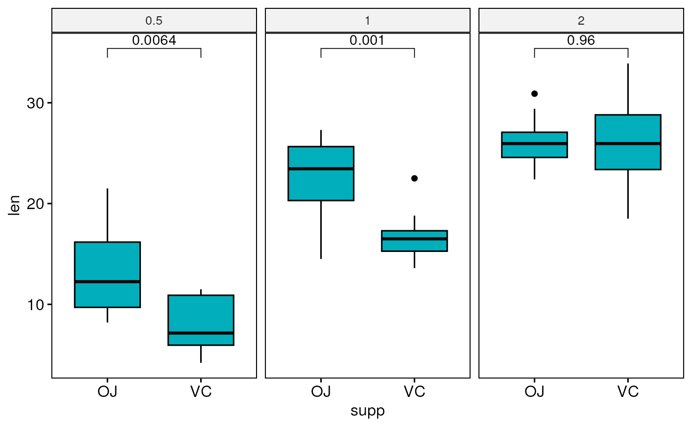

Adjust p-values produced by geom_pwc() on a ggplot.
This is mainly useful when using facet, where p-values are generally
computed and adjusted by panel without taking into account the other panels.
In this case, one might want to adjust after the p-values of all panels together.
a ggplot
An integer indicating the statistical layer rank in the ggplot (in the order added to the plot).
method for adjusting p values (see
p.adjust). Has impact only in a situation, where
multiple pairwise tests are performed; or when there are multiple grouping
variables. Ignored when the specified method is "tukey_hsd" or
"games_howell_test" because they come with internal p adjustment
method. Allowed values include "holm", "hochberg", "hommel", "bonferroni",
"BH", "BY", "fdr", "none". If you don't want to adjust the p value (not
recommended), use p.adjust.method = "none".
character string specifying label. Can be:
the
column containing the label (e.g.: label = "p" or label =
"p.adj"), where p is the p-value. Other possible values are
"p.signif", "p.adj.signif", "p.format", "p.adj.format".
an
expression that can be formatted by the glue() package.
For example, when specifying label = "Wilcoxon, p = \{p\}", the
expression {p} will be replaced by its value.
a combination of
plotmath expressions and glue expressions. You may want some of the
statistical parameter in italic; for example:label = "Wilcoxon,
italic(p)= {p}"
.
can be logical value (TRUE or FALSE) or a character vector ("p.adj" or "p").
a list of arguments to pass to the function
symnum for symbolic number coding of p-values. For
example, symnum.args <- list(cutpoints = c(0, 0.0001, 0.001, 0.01,
0.05, Inf), symbols = c("****", "***", "**", "*", "ns")).
In other words, we use the following convention for symbols indicating statistical significance:
ns: p > 0.05
*: p <= 0.05
**: p <= 0.01
***: p <= 0.001
****: p <= 0.0001
character. Possible values are one of c("plot",
"stat_test"). Default is "plot".
# Data preparation
#:::::::::::::::::::::::::::::::::::::::
df <- ToothGrowth
df$dose <- as.factor(df$dose)
# Add a random grouping variable
df$group <- factor(rep(c("grp1", "grp2"), 30))
head(df, 3)
#> len supp dose group
#> 1 4.2 VC 0.5 grp1
#> 2 11.5 VC 0.5 grp2
#> 3 7.3 VC 0.5 grp1
# Boxplot: Two groups by panel
#:::::::::::::::::::::::::::::::::::::::
# Create a box plot
bxp <- ggboxplot(
df, x = "supp", y = "len", fill = "#00AFBB",
facet.by = "dose"
)
# Make facet and add p-values
bxp <- bxp + geom_pwc(method = "t_test")
bxp

# Adjust all p-values together after
ggadjust_pvalue(
bxp, p.adjust.method = "bonferroni",
label = "{p.adj.format}{p.adj.signif}", hide.ns = TRUE
)
# Boxplot: Three groups by panel
#:::::::::::::::::::::::::::::::::::::::
# Create a box plot
bxp <- ggboxplot(
df, x = "dose", y = "len", fill = "#00AFBB",
facet.by = "supp"
)
# Make facet and add p-values
bxp <- bxp + geom_pwc(method = "t_test")
bxp
# Adjust all p-values together after
ggadjust_pvalue(
bxp, p.adjust.method = "bonferroni",
label = "{p.adj.format}{p.adj.signif}"
)